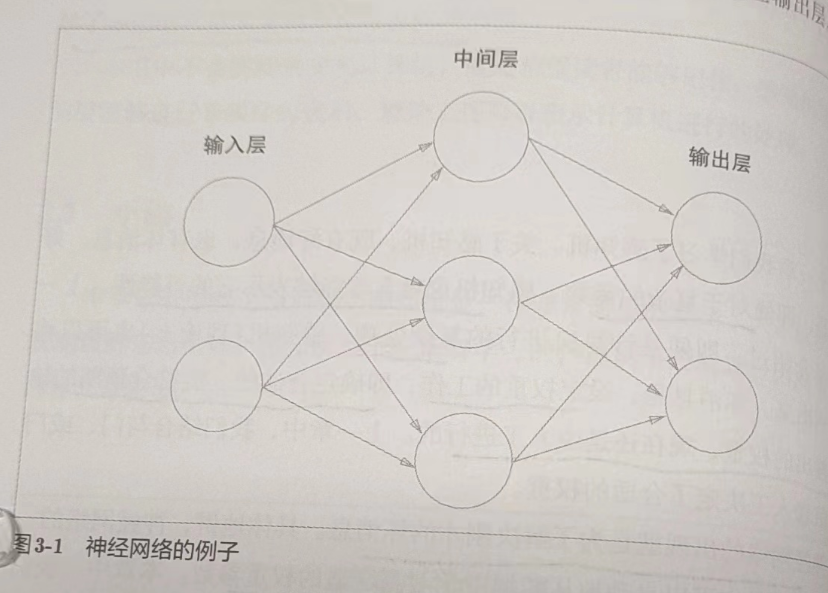

1. python 入门
1.5 Numpy
深度学习中经常出现数组和矩阵运算，Numpy 的数组类 numpy.array 提供了很多便捷的方法
1.5.1 导入 Numpy
import numpy as np
1.5.2 生成 Numpy 数组
np.array()，接收 python 列表，生成 Numpy 数组
x = np.array([1.0, 2.0, 3.0])
print(x)
print(type(x))
1.5.3 Numpy 的数学运算
x = np.array([1.0, 2.0, 3.0])
y = np.array([2.0, 4.0, 6.0])
print(x + y)
print(x - y)
print(x * y)
print(x / y)
需要注意，用于计算的数组的元素个数要相同
‘对应元素的’的英文是 element-wise，而 numpy 不仅可以进行 element-wise 运算，还可以和单一的数值（标量）组合起来进行计算。此时，需要在 numpy 数组的各个元素和标量之间进行计算，这个功能也称为广播
x = np.array([1.0, 2.0, 3.0])
print(x / 2.0)
1.5.4 Numpy 的 N 维数组
numpy 可以生成多维数组
A = np.array([[1, 2], [3, 4]])
print(A)
print(A.shape)
print(A.dtype)
shape 可以查看矩阵的形状，dtype 可以查看矩阵元素的数据类型
B = np.array([[3, 0], [0, 6]])
print(A + B)
print(A * B)
矩阵运算可以在相同形状的矩阵间以对应元素的方式进行。也可以通过标量（单一数值）对矩阵进行算术运算。这也是基于广播的功能
print(A)
print(A * 10)
数学上将一维数组称为‘向量’，将二维数组称为‘矩阵’，将一般化后的向量或矩阵等统称为‘张量’（tensor）。本书将二维数组称为矩阵，三维及以上称为‘张量’或‘多维数组’
1.5.5 广播
numpy 中形状不同的数组之间也可以进行运算。之前的例子中，2x2 的矩阵和标量 10 之间进行了乘法运算。这个过程中，标量 10 被扩展成 2x2 的形状，然后再与矩阵 A 进行乘法运算。这个功能就是广播

1.5.6 访问元素
X = np.array([[51, 55], [14, 19], [0, 4]])
print(X)
print(X[0]) # 第0行
print(X[0][1]) # (0,1)的元素
使用 for 遍历
for row in X:
print(row)
使用数组访问
X = X.flatten() # 将X转为一维数组
print(X)
print(X[np.array([0, 2, 4])]) # 获取索引为0、2、4的元素
通过这个标记法，可以获取满足一定条件的元素。例如，获取 x 中大于 15 的元素
print(X > 15)
print(X[X > 15])
通过不等号得到了布尔型数组，并通过布尔型数组取出 X 的各个元素（取出 True 对应的元素）
- python 等动态语言一般比 c 和 c++等静态语言（编译型）运算速度慢，所以很多追求性能的场景，人们用 c、c++编写，然后让 python 调用，numpy 也是如此
1.6 Matplotlib
图形绘制和可视化的库
1.6.1 绘制简单图形
sin 函数曲线
import numpy as np
import matplotlib.pyplot as plt
# 生成数据
x = np.arange(0, 6, 0.1) # 以0.1为步长（单位），生成0到6的数据
y = np.sin(x)
# 绘制图形
plt.plot(x, y)
plt.show()

1.6.2 pyplot 的功能
在刚才的 sin 函数图形中追加 cos 函数的图形，并尝试使用 pyplot 的添加标题和 x 轴标签名等其他功能
import numpy as np
import matplotlib.pyplot as plt
plt.switch_backend('TkAgg')
# 绘制sin函数曲线
# 生成数据
x = np.arange(0, 6, 0.1) # 以0.1为步长（单位），生成0到6的数据
y1 = np.sin(x)
y2 = np.cos(x)
# 绘制图形
plt.plot(x, y1, label='cos')
plt.plot(x, y2, linestyle='--', label='cos') # 用虚线绘制
plt.xlabel('x') # x轴标签
plt.ylabel('y') # y轴标签
plt.title('sin & cos') # 标题
plt.legend()
plt.show()
1.6.3 显示图像
pyplot 提供了显示图形的方法 imshow()。此外，还可以使用 matplotlib.image 里的 imread() 读取图像
import matplotlib.pyplot as plt
from matplotlib.image import imread
img = imread('lena.jpg') # 读入图像（设定合适的路径）
plt.imshow(img)
plt.show()
2. 感知机
感知机(perceptron)是由美国学者 Frank Rosenblatt 在 1957 年提出的。它作为神经网络（深度学习）的起源的算法，是学习神经网络和深度学习的重要一环
- 严格地说，本章所说的感知机应该称为‘人工神经元’或‘朴素感知机’，但是因为很多基本原理是共通的，所以这里简单称为‘感知机’
2.1 感知机是什么
感知机接收多个输入信号，输出一个信号。感知机的信号会形成流，向前方传递信息。感知机的信号只有‘流’/‘不流’(1/0)两种取值。本书中，0 表示‘不传递信号’，1 表示‘传递信号’
下图是一个接收两个输入信号的感知机的例子。x1、x2 是输入信号，y 是输出信号，w1、w2 是权重。圆形是‘神经元’或‘节点’。输入信号被送往神经元时，会被分别乘以固定的权重(w1x1,w2x2)。神经元会计算传送过来的信号的总和，只有这个总和超过了某个界限值时，才会输出 1。这也称为‘神经元被激活’。这个界限值称为阈值，用符号 θ 表示

感知机的多个输入信号都有各自固有的权重，发挥着控制各个信号的重要性的作用。也就是说，权重越大，对应该权重的信号的重要性就越高
- 权重相当于电流里所说的电阻。电阻是决定电流流动难度的参数，电阻越低，通过的电流就越大。而感知机的权重则是值越大，通过的信号就越大。在控制信号流动难度（或者流动容易度）这一点上的作用是一样的。
2.2 简单逻辑电路
2.2.1 与门（AND gate）
与门是有两个输入和一个输出的门电路。与门仅在两个输入均为 1 时输出 1，其他时候输出 0

如果用感知机来表示，怎么确定 w1、w2、θ 的值才能满足该真值表？
实际上，满足该条件的参数的选择方法有无数个。比如(w1,w2,θ)=(0.5,0.5,0.7) or (w1,w2,θ)=(0.5,0.5,0.8) or (w1,w2,θ)=(1.0,1.0,1.0)时。设定这样的参数后，仅当 x1 和 x2 同时为 1 时，信号的加权总和才会超过给定的阈值 θ。
2.2.2 与非门(NAND gate)和或门
与非门就是颠倒了与门的输出。仅当 x1 和 x2 同时为 1 时输出 0，其他时候则输出 1
感知机表示与非门，只需要将实现与门的参数值的符号取反就可以实现
与门是‘只要有一个输入信号是 1，输出就为 1’的逻辑电路

与门、与非门、或门的感知机构造是一样的。它们只有参数的值（权重和阈值）不同。也就是说，相同构造的感知机只要调整参数的值，就可以变成不同的逻辑电路
- 这里我们人为决定感知机参数，看着真值表这种‘训练数据’，人工考虑了参数的值。而机器学习的课题就是将这个决定参数值的工作交给计算机自动进行。‘学习’是确定合适参数的过程，人要做的就是思考感知机的构造（模型），并将训练数据交给计算机。
2.3 感知机的实现
2.3.1 简单的实现
先定义一个接收参数 x1 和 x2 的 AND 函数
def AND(x1, x2):
w1, w2, theta = 0.5, 0.5, 0.7
tmp = x1 * w1 + x2 * w2
if tmp <= theta:
return 0
elif tmp > theta:
return 1
在函数内初始化参数 w1、w2、theta，但输入的加权总和超过阈值时返回 1，否则返回 0
print(AND(0, 0)) # 0
print(AND(0, 1)) # 0
print(AND(1, 0)) # 0
print(AND(1, 1)) # 1
2.3.2 导入权重和偏置
将之前的式子的阈值换成偏置，即 θ 换成-b
改变后，表达的内容依然完全相同。b 称为偏置，w 称为权重，感知机计算输入信号和权重的乘积，然后加上偏置，如果这个值大于 0 则输出 1，否则输出 0。
import numpy as np
x = np.array([0, 1]) # 输入
w = np.array([0.5, 0.5]) # 权重
b = -0.7 # 偏置
print(w * x)
np.sum(w * x)
print(np.sum(w * x) + b)
# -0.19999999999999996 大约为-0.2（由浮点小数造成的运算误差）
这里 numpy 数组乘法运算，当两个数组的元素个数相同时，各个元素分别相乘，之后 sum(w*x)计算相乘后的各个元素的总和。最后加上偏置，完成计算
2.3.3 使用权重和偏置的实现
def AND(x1, x2):
x = np.array([x1, x2])
w = np.array([0.5, 0.5])
b = -0.7
tmp = np.sum(w * x) + b
if tmp <= 0:
return 0
else:
return 1
权重 w1、w2 是控制输入信号的重要性的参数，而偏置是调整神经元被激活的容易程度（输出信号为 1 的程度）的参数。
- 偏置这个术语，有‘穿木屐’的效果，即在没有任何输入时（输入为 0 时），给输出穿上多高的木屐（加上多大的值）的意思。
继续实现与非门和或门
def NAND(x1, x2):
x = np.array([x1, x2])
w = np.array([-0.5, -0.5])
b = 0.7
tmp = np.sum(w * x) + b
if tmp <= 0:
return 0
else:
return 1
def OR(x1, x2):
x = np.array([x1, x2])
w = np.array([0.5, 0.5])
b = -0.2
tmp = np.sum(w * x) + b
if tmp <= 0:
return 0
else:
return 1
2.4 感知机的局限性
2.4.1 异或门
异或门也称为逻辑异或电路。仅当 x1 或 x2 中的一方为 1 时，才会输出 1（‘异或’是拒绝其他的意思）。

前面介绍的感知机无法实现这个异或门。
我们将或门的动作形象化。或门的情况下，当权重参数(b,w1,w2)=(-0.5,1.0,1.0)时，可以用下面的式子表示

该式表示感知机会生成由直线-0.5 + x1 + x2 = 0 分割开的两个空间。其中一个空间输出 1，另一个空间输出 0
但是如何用一条直线分割出异或的 0、1 输出空间？事实上，用一条直线无法将 0、1 分开
2.4.2 线性和非线性
感知机的局限性就在于它只能表示由一条直线分割的空间。如果用曲线分割，就可以实现。由曲线分割而成的空间称为非线性空间，由直线分割而成的空间称为线性空间。线性和非线性这两个术语在机器学习领域很常见。

2.5 多层感知机
感知机的绝妙之处在于它可以‘叠加层’（通过叠加层来表示异或门或门是本节的要点）。我们暂不考虑叠加层具体是指什么，先从其他视角来思考一下异或门的问题。
2.5.1 已有门电路的组合
异或门制作方法有很多，其中之一就是与门、或门、与非门的组合。这几个门我们用下面的符号表示，图 2-9 中与非门前端的〇表示反转输出的意思


2.5.2 异或门的实现
def XOR(x1, x2):
s1 = NAND(x1, x2)
s2 = OR(x1, x2)
y = AND(s1, s2)
return y
print(XOR(0, 0)) # 0
print(XOR(0, 1)) # 1
print(XOR(1, 0)) # 1
print(XOR(1, 1)) # 0
异或门是一种多层结构的神经网络。这里，将最左边的一列称为第 0 层，中间的一列称为第一层，最右边的一列称为第 2 层。
实际上，与门、或门是单层感知机，而异或门是 2 层感知机。叠加了多层的感知机也称为多层感知机(multi-layered perceptron)

- 上图由 3 层构成，但是因为拥有权重的实际上只有两层（第 0 层到第 1 层，第 1 层和第 2 层之间），所以称为‘2 层感知机’，也有的文献认为这是由 3 层构成，所以称为‘3 层感知机’
在这种多层感知机中，第一层输出变为第二层输入，数据在之间不断传送。通过叠加层，感知机能进行更加灵活的表示。
2.6 从与非门到计算机
多层感知机可以实现比之前见到的电路更复杂的电路。比如加法运算的加法器、二进制转十进制的编码器、满足某些条件就输出 1 的电路（用于等价检验的电路）……甚至可以表示计算机
计算机是处理信息的机器。输入信息，会按照某个既定规则进行计算，然后输出，这和感知机是一样的
只需要通过与非门的组合，就能再现计算机
- 拓展阅读：《计算机系统要素：从零开始构建现代计算机》
多少层（层级多深）的感知机可以表示计算机？理论上可以说 2 层感知机就可以构建计算机。有研究证明，2 层感知机（严格地说是激活函数使用了非线性的 sigmoid 函数的感知机）可以表示任意函数。但是使用 2 层感知机的构造，通过设定合适的权重来构建计算机是非常累人的事。
实际上，用与非门等低层元件构建计算机的情况下，分阶段地制作所需的零件（模块）会比较自然，即先实现与门和或门，然后实现半加器和全加器，接着实现算数逻辑单元（ALU），然后实现 CPU。使用这种叠加了多层的构造来实现是比较自然的流程。
2.7 小结
- 感知机是具有输入和输出的算法。给定一个输入后，将输出一个既定的值
- 感知机将权重和偏置设定为参数。
- 使用感知机可以表示与门和或门等逻辑电路
- 异或门无法通过单层感知机来表示。
- 使用 2 层感知机可以表示异或门
- 单层感知机只能表示线性空间，而多层感知机可以表示非线性空间。
- 多层感知机（在理论上）可以表示计算机。
3. 神经网络
神经网络的出现就是为了解决设定权重的工作，即机器自动从数据中学习，确定合适的、能符合预期的输入与输出的权重。
3.1 从感知机到神经网络
神经网络和感知机有很多共同点，这里主要介绍差异
3.1.1 神经网络例子
下图 3-1 表示神经网络，我们将最左边的一列称为输入层，最右边的一列称为输出层，中间的一列称为中间层。中间层有时也称为隐藏层。‘隐藏’的意思是，隐藏层的神经元（和输入层、输出层不同）肉眼看不见。另外，本书的层号从零开始计算，为了方便用 python 实现神经网络

- 图 3-1 的网络一共由 3 层神经元组成，当实际上只有 2 层神经元有权重，因此本书将其称为‘2 层网络’。也有的书会把它称为 3 层网络。
那么，神经网络中的信号是如何传递的呢？
3.1.2 复习感知机
思考下图中的网络结构
b 是被称为偏置的参数，用于控制神经元被激活的容易程度；而 w1 和 w2 是表示各个信号的权重的参数，用于控制各个信号的重要性
在图 3-2 中没有把 b 画出来，如果要明确表示 b，可以像图 3-3 那样。图 3-3 添加了权重为 b 的输入信号 1。这个感知机将 x1、x2、1 三个信号作为神经元的输入，将其和各自的权重相乘后，传送至下一个神经元。在下一个神经元中，计算这些加权信号的总和。如果这个总和超过 0，则输出 1，否则输出 0。
为了简化式子（3.1），我们引入一个新函数 h(x)来表示这种分情况的动作（超过 0 则输出 1，否则输出 0）。
在式子(3.2)中，输入信号的总和会被函数 h(x)转换，转换后的值就是输出 y。
3.1.3 激活函数登场
h(x)函数会将输入信号的总和转换为输出信号，这种函数一般称为激活函数(activation function)。它的作用在于决定如何来激活输入信号的总和。
改写式子（3.2），将其分为两个阶段处理，先计算输入信号的加权总和，然后用激活函数转换这一总和。

首先式子（3.4）计算加权输入信号和偏置的总和，记为 a，然后式子（3.5）用 h()函数将 a 转换为输出 y

- 本书在使用‘感知机’一词时，没有严格统一它所指的算法。一般而言，‘朴素感知机’是指单层网络，指的是激活函数使用了阶跃函数的模型。‘多层感知机’是指神经网络，即使用 sigmoid 函数等平滑的激活函数的多层网络。
3.2 激活函数
式子（3.3）表示的激活函数以阈值为界，一旦输入超过阈值，就切换输出。这样的函数称为‘阶跃函数’。感知机中使用了阶跃函数作为激活函数。如果使用其他的激活函数，就可以进入神经网络的世界了。
3.2.1 sigmoid 函数
神经网络中最常使用的一个激活函数就是 sigmoid 函数

exp(-x)是 e^(-x)的意思。e 是纳皮尔常数 2.7182···。函数，就是给定某个输入后，会返回某个输出的转换器。
神经网络中用 sigmoid 函数作为激活函数，进行信号的转换，转换后的信号被传送给下一个神经元。感知机和神经网络的主要区别就在于这个激活函数。其他方面，比如多层连接的构造、信号的传递方法等，基本和感知机一致。
3.2.2 阶跃函数的实现
def step_function(x):
if x > 0:
return 1
else:
return 0
改为支持 numpy 数组的实现
def step_function(x):
y = x > 0
return y.astype(np.int)
上面使用了 numpy 的技巧
import numpy as np
x = np.array([-1.0, 1.0, 2.0])
y = x > 0
print(y) # [False True True]
在条件运算后，符合条件的变为 true，不符合的变为 false，生成一个布尔型数组。但是阶跃函数需要输出 int 类型，所以需要转换
y = y.astype(np.int)
print(y) # [0 1 1]
3.2.3 阶跃函数的图形
import numpy as np
import matplotlib.pylab as plt
plt.switch_backend('TkAgg')
# 阶跃函数
def step_function(x):
return np.array(x > 0, dtype=np.int)
x = np.arange(-5.0, 5.0, 0.1)
y = step_function(x)
plt.plot(x, y)
plt.ylim(-0.1, 1.1) # 指定y轴的范围
plt.show()
阶跃函数以 0 为界，输出从 0 开始切换为 1（或者从 1 切换为 0），值呈阶梯式变化，所以称为阶跃函数
3.2.4 sigmoid 函数的实现
def sigmoid(x):
# exp(-x) -> e^(-x)
return 1 / (1 + np.exp(-x))
x = np.array([-1.0, 1.0, 2.0])
# [0.26894142 0.73105858 0.88079708]
print(sigmoid(x))
该函数可以支持 np 数组，因为 np 有广播机制，可以支持标量和数组的运算，会将标量的计算运用到每个数组元素
画图
x = np.arange(-5.0, 5.0, 0.1)
y = sigmoid(x)
plt.plot(x, y)
plt.ylim(-0.1, 1.1) # 指定y轴的范围
plt.show()
3.2.5 sigmoid 函数和阶跃函数的比较
首先，平滑性不同：sigmoid 函数是一条平滑的曲线，输出随着输入发生连续性的变化。而阶跃函数以 0 为界，输出发生急剧性的变化。sigmoid 函数的平滑性对神经网络的学习具有重要意义。